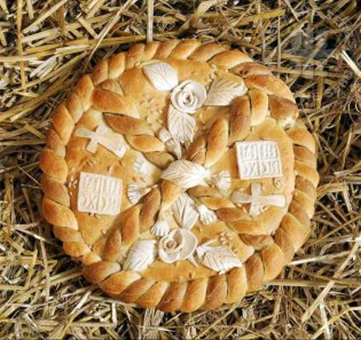

1. Zadar, Croatia
Food:
Make sure to try the Burek. They come in slices or even full semicircles, wrapped in paper, so they're great for taking on the go. Cheese is a common flavor, but other toppings are available.
You can also enjoy generous Mediterranean cuts of meat and/or proshut (Croatian take on prosciutto) while relaxing at one of Zadar's many cafes during an evening by the sea.
Sights:
Enjoy the world's largest wave organ, creating enchanting harmonies and dissonances by harnessing the natural ebb and flow of the Adriatic Sea.
2. Banja Luka, Republic of Serbia, Bosnia and Herzegovina
Food:
Make sure to try Sarma while you're in town! (And don't be surprised if each country claims Sarma as its own—they're all essentially scrumptious meat-filled cabbage rolls!)
Sights:
I recommend traveling to Banja Luka by bus or car to fully take in the rustic charm of the idyllic mountainous countryside. Don't be surprised if you find yourself stopped in front of a flock of sheep being herded across the highway. Check out the historical sites Banja Luka has to offer, dating back several ages past.
3. Belgrade, Serbia
Food:
After flying into Serbia's Nikola Tesla airport, which you won't be surprised to find out is neatly decorated with apt technology-related decor, you can enjoy Serbian beer before you even leave the airport!
For the sweets-lover, make sure to try Chesnitsa, or Serbian Christmas Bread (picture below). 
or Presnuts (like a more decadent Baklava), but remember, Cesnica's availability depends on the season (winter holidays are the best)!